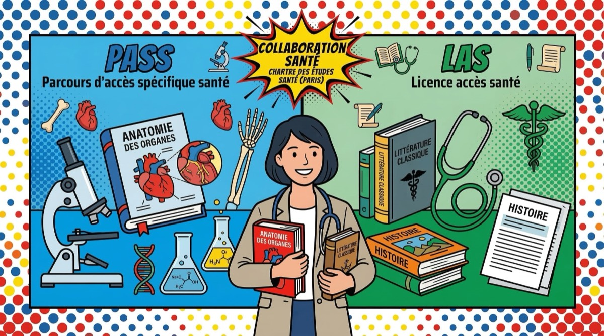

PASS ou LAS : comment choisir le bon parcours ?

Tu hésites entre le PASS et le LAS pour accéder aux études de santé ? T'inquiète, tu es loin d'être le seul. C'est LA question que se posent tous les lycéens qui veulent faire médecine, pharmacie, kiné ou dentaire. On va t'expliquer les vraies différences pour que tu fasses un choix éclairé.
PASS et LAS : c'est quoi exactement ?
Depuis la réforme de 2020, la PACES a été remplacée par deux voies d'accès aux études de santé :
- PASS (Parcours d'Accès Spécifique Santé) : une année dédiée à la santé, avec une « mineure » dans une autre discipline (droit, psycho, sciences, etc.)
- LAS (Licence Accès Santé) : une licence classique (biologie, droit, économie…) avec une « option santé » en plus
Les deux mènent aux mêmes filières : médecine, maïeutique, odontologie, pharmacie et kinésithérapie (MMOPK).
Il n'y a pas de « mauvais » choix entre PASS et LAS. Ce qui compte, c'est de choisir la voie qui correspond le mieux à ton profil et à ta stratégie.
Le PASS : pour qui ?
Le PASS est la voie la plus directe vers les études de santé. Si tu es sûr de ton projet et que tu as un profil scientifique solide, c'est probablement la voie faite pour toi.
Les avantages du PASS
- 100% santé : la majorité de tes cours portent sur les matières de santé (biologie, chimie, physique, anatomie, biostatistiques…)
- Plus de places : dans la plupart des facs, le PASS offre plus de places en 2e année que le LAS
- Immersion totale : tu es plongé dans l'ambiance des études de santé dès le premier jour
- Tutorat accessible : les associations étudiantes organisent généralement un tutorat gratuit pour les PASS
Les inconvénients du PASS
- Pas de redoublement : si tu échoues en PASS, tu ne peux pas le refaire. Tu devras passer par une LAS ou te réorienter
- Charge de travail intense : les journées sont longues et le rythme est soutenu dès septembre
- Peu de « filet de sécurité » : si ça ne marche pas, tu repars avec ta mineure mais pas de licence complète
Le LAS : pour qui ?
Le LAS est idéal si tu veux te laisser une porte de sortie ou si tu hésites encore un peu sur ton orientation.
Les avantages du LAS
- Un plan B intégré : si tu n'accèdes pas aux études de santé, tu continues ta licence normalement (pas d'année « perdue »)
- Plusieurs tentatives : tu peux candidater aux études de santé en L1, L2, voire L3 dans certaines facs
- Diversité des profils : tu peux venir d'un parcours moins scientifique et quand même tenter ta chance
- Pression différente : le rythme est intense mais tu n'es pas dans le « tout ou rien » du PASS
Les inconvénients du LAS
- Double charge : tu dois réussir ta licence ET l'option santé en même temps
- Moins de places : les places en 2e année sont généralement moins nombreuses via le LAS
- Cours de santé réduits : tu as moins d'heures de matières santé qu'en PASS, donc il faut être très autonome
En LAS, tu valides une vraie licence. Même si tu n'intègres pas la filière santé, tu as un diplôme en poche. C'est un avantage qu'on sous-estime souvent.
Comment choisir ? Les bonnes questions à se poser
1. Es-tu sûr de vouloir faire santé ?
Si tu es 100% motivé et que la médecine (ou pharma, kiné, dentaire) est ton objectif numéro 1, le PASS est la voie la plus directe. Si tu hésites encore entre santé et autre chose, le LAS te donne plus de flexibilité.
2. Quel est ton profil scolaire ?
Le PASS demande des bases solides en sciences. Si tu es à l'aise en SVT, physique-chimie et maths, tu partiras avec un bon bagage. Si ton profil est plus littéraire ou que tu n'as pas choisi la spécialité maths, le LAS peut être plus adapté.
3. Comment gères-tu la pression ?
Le PASS est un sprint intense sur un an. Le LAS permet d'étaler un peu plus l'effort. Sois honnête avec toi-même sur ta capacité à encaisser un rythme soutenu.
4. Quelle est l'offre de ta fac ?
Chaque université a sa propre organisation. Certaines facs proposent plus de places en PASS, d'autres ont développé des LAS très bien accompagnées. Renseigne-toi sur les spécificités de ta fac cible.
Notre Quizz x Fac peut t'aider à y voir plus clair en analysant ton profil et tes préférences.
Que se passe-t-il en cas d'échec ?
Si tu échoues en PASS
Tu ne peux pas redoubler le PASS (c'est la règle). Mais tu as plusieurs options :
- T'inscrire en LAS pour retenter l'accès santé en L2 ou L3
- Continuer dans la licence correspondant à ta mineure PASS
- Te réorienter vers une autre formation
Si tu échoues en LAS
La bonne nouvelle : tu continues ta licence normalement. Tu peux retenter l'option santé l'année suivante si ta fac le permet. Tu ne « perds » pas ton année.
L'échec en PASS n'est pas la fin du monde. Beaucoup d'étudiants réussissent par la voie LAS après un PASS non concluant. L'important, c'est de rebondir.
Ce qu'il faut retenir
Il n'y a pas de voie « meilleure » que l'autre. Le PASS convient aux profils scientifiques déterminés, le LAS aux profils qui veulent garder de la flexibilité. Dans les deux cas, la clé c'est le travail, la régularité et une bonne méthode.
Si tu veux estimer tes chances d'admission dans les différentes facs, utilise notre Simulateur Parcoursup — c'est gratuit et ça te donnera une vision plus claire de tes options.